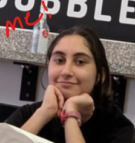

Who are you to give me advice?
I've had a high GPA so far (at the time I'm writing this, I am a rising senior) - 3.9 (APES was though, okay?).
I also led a club or two.
Am I successful? Maybe. Am I observant and do I think critically? Yes, I believe so.
Why do you add "Eda's" in front of everything?
To let you know what parts of this website I wrote (ex. APES finals site isn't mine), to show you that I am also a student here and that these are generally my opinions. Opinions that I’ve reflected and thought upon for years, for that matter. It’s not because I’m a narcissist, I promise.
Why did you make this?
I felt inspired for some reason, and I also realized how many tips documents I'd written. So, why not make a website? Also, I made the high school tips document for my sister who is about to enter high school, and realized this might be helpful for others who are also nervous.
Contact info
Email: 1074186@lwsd.org
Insta: @edake2007 (note: I check it once a month)
Or just find me in the halls! I am Eda Keskin
